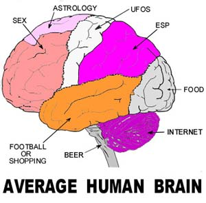

|
NO SIXTH SENSE
James
Randi

Readers often send me notices of interesting items, as I'm sure
all of you are aware. When a claim of a "sixth sense" found by
scientists in the UK was recently announced in the news, that
certainly got my rapt attention. But, as with most of these
"breakthroughs," the claim quickly faded upon closer examination.
Here's the process:
As a magician, I'm well aware of the difference between
"seeing" something, and "perceiving" it. My spectators frequently
"see" the secret of a trick, but aren't aware of it — they don't
process what enters their eyes, but ignore it. Try this
experiment: look over to your left, and focus on some object
there. Next, look over to your right — at least 90 degrees to the
right — and focus on another object there. Okay? Now answer this
question: Did you see anything in between the two objects you
focused on? Yes, you did see the information in between, in that
the image scanned across your retina as you switched from target
to target, but you didn't actually perceive that
information. (The difference here is that to "perceive" means to
be aware of, or to identify, while "seeing" something is only
having the image hit your retina, while you don't necessarily
identify it or analyze the data you received.) This small
experiment demonstrates the process whereby a spectator can "see"
the modus, but not be aware of it because it looks like natural
background or ambient information, and it doesn't get processed.
All of which brings me to this item:
I've had several notices about a media report that tells of a
52-year old British man with a peculiar condition. He suffered two
strokes which damaged his brain areas that would normally process
his visual input, leaving him "blind." However, his eyes and optic
nerves are still intact, and what really amazes one here is that
though researchers at the University of Wales found that he cannot
recognize simple, basic images of shapes such as circles or
squares, and has a similar lack of success determining the gender
of emotionless male and female faces, he is able to
identify and analyze pictures of human faces showing strong
emotions such as anger, happiness or fear — to a significant
degree of accuracy.
The researchers performed brain scans on the subject, which
indicated that when he was shown pictures of faces expressing
emotion, it activated the part of his brain called the right
amygdala, which is known to recognize and respond to non-verbal
emotional signals.
Now, this claim is not at all difficult for me to accept as
quite possible. However, the report published on the Aljazeera web
site (http://english.aljazeera.net/NR/exeres/FBEEE8FB-DAEC-48A8-A0F4-1624F408A063.htm)
starts with the very erroneous and presumptuous statement:
A completely blind British man has been shown to possess an
apparent sixth sense which lets him recognize emotions on
people's faces, British scientists said.
That's not at all what they said. The definition of the term
"blind" is paramount here, especially when modified as, "completely
blind." Consider: the process of "seeing" starts with the
information in the form of light entering the eye, becoming a
focused image, and hitting the retina. Next, that data is sent to
the brain for processing. If this report about the Brit is true,
that's where the interpretation has broken down, allowing only the
"severe human facial expressions" function of the brain to accept
and process the data.
This is not too far-fetched an idea, at all. We know of
well-verified examples (few, but enough) of persons who have lost
their ability to recognize a person by seeing their face, an
ability that I'm told resides in the "right fusiform gyrus,"
located in the temporal lobe of the brain. These people function
quite normally in other respects, but cannot identify even their
close relatives from facial features — though they can sometimes
identify them through specific costumes, voice patterns, or even
individual odors!
Also, persons who have been blind since birth are occasionally
able to obtain their sense of sight later in life — and of course
have problems with stereo vision (since they've not learned to
converge images from the two eyes) and also find that they have to
learn the difference between — for examples — the images of an
orange and a banana, by actually touching each object; they cannot
relate visual images of shapes or sizes to the actual objects. The
portions of their brains that could process that data, have not
yet learned to do so.
Considering these findings, and assuming that these tests were
well done, I do not doubt that the Brit described here is simply
exhibiting the limitations of the brain/retina connection.
Fascinating, but certainly not well-described by the term "sixth
sense." A better description might be that this man has "partial
use of his fifth sense."
In relation to the JREF prize, no cigar.
 |